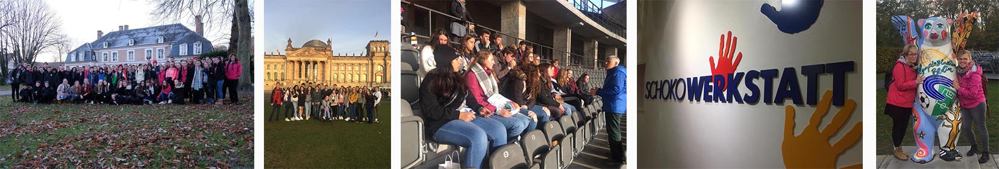

Languages

In an ever shrinking world, learning a foreign language has never been more important. There are so many advantages to being the speaker of another language. Some of which include; impressing people around you, developing you confidence, improving your decision making skills, increasing your brain power, improving your employability, discovering new cultures and meeting new people.
We are proud of our language curriculum and we delight in watching our pupils pass successfully through it.
At Whitchurch we have 8 dedicated languages classrooms, equipped with some of the newest teaching and learning resources, including some leading digital assets.
The MFL department offers the following courses at Key Stage 4 and 5:
GCSE AS/A2
Lessons involve a wide variety of teaching methods. Grammar and topic based vocabulary are introduced in a modern and entertaining way, encouraging pupils to make links and comparisons with both English and Welsh in order to maximise their literacy skills.
Pupils can improve their communication skills in a variety of situations, working as individuals, in pairs, in groups or as a class on a wide range of tasks that encompass the four key areas of listening, speaking, reading and writing, thus allowing them to see the relevance of languages to their everyday lives.
Expectations
The teachers in the MFL department have high expectations of everybody. Pupils should actively participate and work to the best of their ability in all lessons. Classwork and homework should be completed punctually and to the best of their ability. At the same time, pupils can expect the staff to be hard working, enthusiastic and fair at all times.
The study of a modern foreign language will give pupils a range of skills that are suitable for all walks of life. Effective language learners can expect to achieve higher levels of understanding of their own language and culture as well allowing them to appreciate the sounds and patterns of other languages. Once a second language has been acquired, pupils often find it easier to move on to study a third or fourth language.
Language learners are more open to understanding the culture of different countries and have acquired an understanding of global citizenship. They also benefit from enhanced listening skills, a better capacity to retain vocabulary, logical thinking skills and an ability to think and work quickly in a wide variety of situations.
In a world there is a more than 50% chance of travelling with your employment, MFL skills play a vital role in preparing pupils for their future.
If you require further information, please contact Mrs J Davies, Departmental Leader.